Chapter 09
Markov Chain Monte Carlo
Material
Introduction
These are answers and solutions to the exercises at the end of chapter 9 in Satistical Rethinking 2 by Richard McElreath. I have created these notes as a part of my ongoing involvement in the AU Bayes Study Group. Much of my inspiration for these solutions, where necessary, has been obtained from Taras Svirskyi, William Wolf, and Corrie Bartelheimer as well as the solutions provided to instructors by Richard McElreath himself.
R Environment
For today’s exercise, I load the following packages:
library(rethinking)
library(rstan)
library(ggplot2)
library(tidybayes)
Easy Exercises
Practice E1
Question: Which of the following is a requirement of the simple Metropolis algorithm?
- The parameters must be discrete.
- The likelihood function must be Gaussian.
- The proposal distribution must be symmetric.
Answer:
- Not a requirement. Metropolis can accommodate continuous and discrete parameters.
- Not a requirement. Distribution could be any symmetric distribution. Not just Gaussian.
- This is a requirement.
Practice E2
Question: Gibbs sampling is more efficient than the Metropolis algorithm. How does it achieve this extra efficiency? Are there any limitations to the Gibbs sampling strategy?
Answer: Gibbs uses adaptive proposals when considering which location in the posterior to sample next. This makes it more efficient because less proposed steps are rejected.
Practice E3
Question: Which sort of parameters can Hamiltonian Monte Carlo not handle? Can you explain why?
Answer: Discrete parameters. HMC depends on gradients which to explore using a physics simulation. Discrete parameters would not allow for the construction of any gradients.
Practice E4
Question: Explain the difference between the effective number of samples, n_eff as calculated by Stan, and the actual number of samples.
Answer: Effective sample number (n_eff) identifies the number of ‘ideal’ (i.e. uncorrelated) samples. Since MCMC algorithms explore the posterior as a chain of samples, each sample is usually correlated with the previous one to some extent. Conclusively, n_eff identifies the number of samples used for estimating the posterior mean/distribution whereas actual number of samples is simply the number of data points we have.
n_eff is usually smaller than the actual number of samples (unless we have anti-correlated MCMC samples).
Practice E5
Question: Which value should Rhat approach, when a chain is sampling the posterior distribution correctly?
Answer: $\hat{R}$ or Rhat, in R, reflects variance within a chain versus variance between chains. If these are the same, $\hat{R}$ will be $1.0$ - i.e.: it does not matter from which chain we would infere parameters and predictions. Values higher than 1.0 can indicate problems in the model. Values much higher than 1 indicate serious issues.
Practice E6
Question: Sketch a good trace plot for a Markov chain, one that is effectively sampling from the posterior distribution. What is good about its shape? Then sketch a trace plot for a malfunctioning Markov chain. What about its shape indicates malfunction?
Answer:
Good trace plot
y <- rnorm(1e4, mean = 1, sd = 2)
m.E6Good <- ulam(
alist(
y ~ dnorm(mu, sigma),
mu <- alpha,
alpha ~ dnorm(0, 10),
sigma ~ dcauchy(0, 1)
),
data = list(y = y),
cores = 2,
chains = 2,
start = list(
alpha = 0,
sigma = 1
)
)
traceplot(m.E6Good)
## [1] 1000
## [1] 1
## [1] 1000
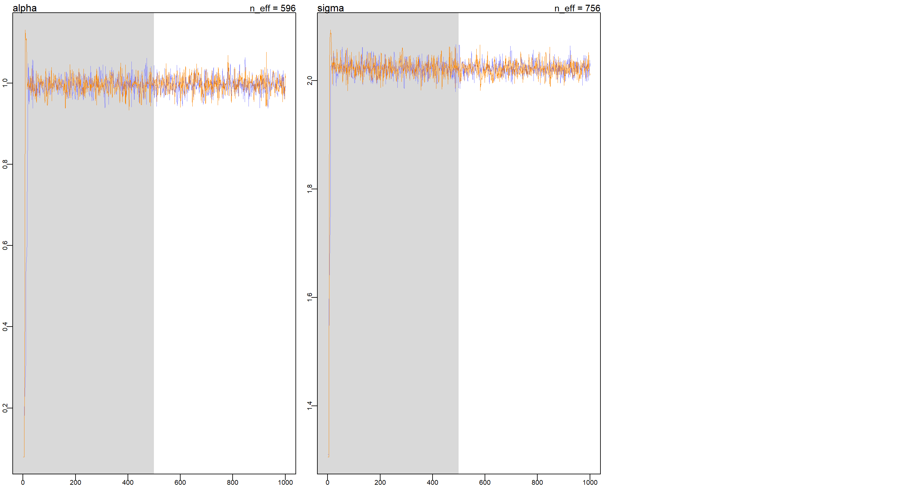 These trace plots show that the chains quickly find the region with highest posterior probability and stay there.
Bad trace plot
y <- rnorm(1e4, mean = 1, sd = 2)
m.E6Bad <- ulam(
alist(
y ~ dnorm(mu, sigma),
mu <- a1 + a2,
a1 ~ dnorm(0, 10),
a2 ~ dnorm(0, 10),
sigma ~ dcauchy(0, 1)
),
data = list(y = y),
chains = 2,
cores = 2,
start = list(
a1 = 0,
a2 = 0,
sigma = 1
),
)
traceplot(m.E6Bad)
## [1] 1000
## [1] 1
## [1] 1000
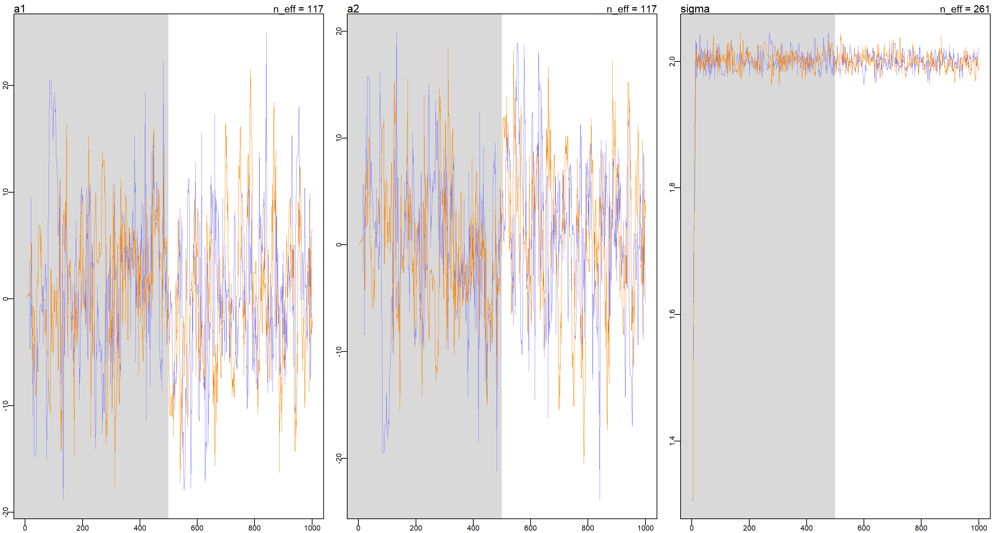
This is a problem of unidentifiable parameters as a1 and a2 can cancel each other out to arrive at the correct mu and so we see non-stationary behaviour in the trace plots of a1 and a2 while the trace plot for sigma is doing alright.
Medium Exercises
Practice M1
Question: Re-estimate the terrain ruggedness model from the chapter, but now using a uniform prior and an exponential prior for the standard deviation, sigma. The uniform prior should be dunif(0,10) and the exponential should be dexp(1). Do the different priors have any detectable influence on the posterior distribution?
Answer: The ruggedness model in question is m8.3 in the book (or m9.1 in ulam() specification). First, I prepare the data like I did
previously.
data(rugged)
d <- rugged
d$log_gdp <- log(d$rgdppc_2000)
d <- d[complete.cases(d$rgdppc_2000), ]
d$log_gdp_std <- d$log_gdp / mean(d$log_gdp)
d$rugged_std <- d$rugged / max(d$rugged)
d$cid <- ifelse(d$cont_africa == 1, 1, 2)
dd.trim <- list(
log_gdp_std = d$log_gdp_std,
rugged_std = d$rugged_std,
cid = as.integer(d$cid)
)
Let’s fit that model with the different priors:
## Exponential prior for sigma
m.M1Exp <- ulam(
alist(
log_gdp_std ~ dnorm(mu, sigma),
mu <- a[cid] + b[cid] * (rugged_std - 0.215),
a[cid] ~ dnorm(1, 0.1),
b[cid] ~ dnorm(0, 0.3),
sigma ~ dexp(1)
),
data = dd.trim,
chains = 4,
cores = 4,
)
## Uniform prior for sigma
m.M1Uni <- ulam(
alist(
log_gdp_std ~ dnorm(mu, sigma),
mu <- a[cid] + b[cid] * (rugged_std - 0.215),
a[cid] ~ dnorm(1, 0.1),
b[cid] ~ dnorm(0, 0.3),
sigma ~ dnorm(0, 10)
),
data = dd.trim,
chains = 4,
cores = 4,
)
Now on to inspect the model. Let’s start with the parameter estimates in comparison
coeftab(m.M1Exp, m.M1Uni)
## m.M1Exp m.M1Uni
## a[1] 0.89 0.89
## a[2] 1.05 1.05
## b[1] 0.13 0.13
## b[2] -0.14 -0.14
## sigma 0.11 0.11
## nobs 170 170
These are strikingly the same. What about the individual model outputs in more detail?
precis(m.M1Exp, depth = 2)
## mean sd 5.5% 94.5% n_eff Rhat4
## a[1] 0.8870817 0.015625699 0.86196179 0.91173540 2453.919 0.9995577
## a[2] 1.0507770 0.009968219 1.03527611 1.06640703 2834.441 0.9988734
## b[1] 0.1344067 0.074307822 0.01486287 0.25218389 2786.188 0.9993677
## b[2] -0.1413442 0.054855132 -0.22964887 -0.05187494 2324.832 0.9983652
## sigma 0.1117154 0.006171670 0.10228974 0.12208002 2725.266 0.9988256
precis(m.M1Uni, depth = 2)
## mean sd 5.5% 94.5% n_eff Rhat4
## a[1] 0.8865936 0.015580736 0.86128553 0.91082334 2489.074 0.9989360
## a[2] 1.0501777 0.010010613 1.03404118 1.06614541 2152.883 1.0007549
## b[1] 0.1312147 0.074609926 0.01239339 0.24998421 2244.528 0.9993558
## b[2] -0.1420136 0.054996077 -0.22957192 -0.05372842 2023.621 0.9987402
## sigma 0.1115782 0.006224722 0.10188964 0.12166315 3600.101 0.9990594
Again, these are very similar aside from the effective number of samples (n_eff) which is much higher for all parameter estimates in the model with the exponential prior on sigma (m.M1Exp) except for sigma itself, which boasts a higher n_eff in the uniform-prior model (m.M1Uni). As such, we conclude that while the different priors have an impact on n_eff, they do not change the posterior distributions. Let me visualise this:
Plot_df <- data.frame(
Posteriors = c(
extract.samples(m.M1Exp, n = 1e4)$sigma,
extract.samples(m.M1Uni, n = 1e4)$sigma
),
Name = rep(c("Exp", "Uni"), each = 1e4),
Model = rep(c("m.M1Exp", "m.M1Uni"), each = 1e4)
)
ggplot(Plot_df, aes(y = Model, x = Posteriors)) +
stat_halfeye() +
labs(x = "Parameter Estimate", y = "Model") +
theme_bw()
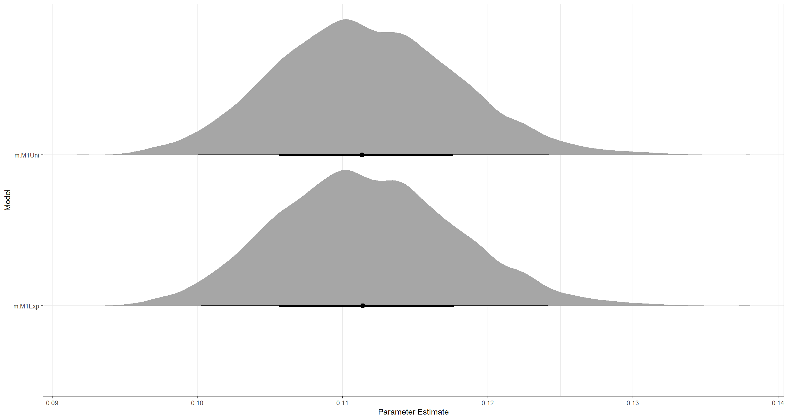 That really does look the same to me.
Practice M2
Question: The Cauchy and exponential priors from the terrain ruggedness model are very weak. They can be made more informative by reducing their scale. Compare the dcauchy and dexp priors for progressively smaller values of the scaling parameter. As these priors become stronger, how does each influence the posterior distribution?
Answer: I write a for loop here to minimise code needs:
RepTimes <- 4 # how many steps I want to try
ScalingFactor <- 10 # by what factor to make priors stronger
# empty lists to store models in
Explist <- as.list(rep(NA, RepTimes))
Caulist <- as.list(rep(NA, RepTimes))
# Loop over all models
for (Mod_Iter in 0:(RepTimes - 1)) {
dd.trim$ScalingFactor <- ScalingFactor
dd.trim$Mod_Iter <- Mod_Iter
## Exponential prior for sigma
m.M2Exp <- ulam(
alist(
log_gdp_std ~ dnorm(mu, sigma),
mu <- a[cid] + b[cid] * (rugged_std - 0.215),
a[cid] ~ dnorm(1, 0.1),
b[cid] ~ dnorm(0, 0.3),
sigma ~ dexp(1 * ScalingFactor^Mod_Iter)
),
data = dd.trim,
chains = 4,
cores = 4,
)
Explist[[Mod_Iter + 1]] <- m.M2Exp
## Cauchy prior for sigma
m.M2Cau <- ulam(
alist(
log_gdp_std ~ dnorm(mu, sigma),
mu <- a[cid] + b[cid] * (rugged_std - 0.215),
a[cid] ~ dnorm(1, 0.1),
b[cid] ~ dnorm(0, 0.3),
sigma ~ dcauchy(0, 1 / ScalingFactor^Mod_Iter)
),
data = dd.trim,
chains = 4,
cores = 4,
)
Caulist[[Mod_Iter + 1]] <- m.M2Cau
}
coeftab(Explist[[1]], Explist[[2]], Explist[[3]], Explist[[4]])
## Explist[[1]] Explist[[2]] Explist[[3]] Explist[[4]]
## a[1] 0.89 0.89 0.89 0.89
## a[2] 1.05 1.05 1.05 1.05
## b[1] 0.13 0.13 0.13 0.13
## b[2] -0.14 -0.14 -0.14 -0.15
## sigma 0.11 0.11 0.11 0.09
## nobs 170 170 170 170
coeftab(Caulist[[1]], Caulist[[2]], Caulist[[3]], Caulist[[4]])
## Caulist[[1]] Caulist[[2]] Caulist[[3]] Caulist[[4]]
## a[1] 0.89 0.89 0.89 0.89
## a[2] 1.05 1.05 1.05 1.05
## b[1] 0.14 0.13 0.13 0.13
## b[2] -0.14 -0.14 -0.14 -0.14
## sigma 0.11 0.11 0.11 0.11
## nobs 170 170 170 170
The more restrictive exponential priors decrease the estimate for sigma. On the other hand, the more restrictive cauchy priors have no effect, it seems.
Let’s explore why this is by looking at the priors themselves:
par(mfrow = c(1, 2))
curve(dexp(x, 1),
from = 0, to = 5, ylab = "Density", xlab = "sigma",
col = "royalblue4"
)
curve(dexp(x, 10), from = 0, to = 5, add = T)
curve(dexp(x, 100), from = 0, to = 5, add = T, col = col.desat("red"))
curve(dexp(x, 1000), from = 0, to = 5, add = T, col = col.desat("green"))
mtext("Exponential Prior")
legend("topright",
col = c("royalblue4", "black", col.desat("red"), col.desat("green")),
lty = c(1, 1, 1), legend = c("Exp(1)", "Exp(10)", "Exp(100)", "Exp(1000)"), bty = "n"
)
curve(2 * dcauchy(x, 0, 1),
from = 0, to = 5, ylab = "Density", xlab = "sigma",
col = "royalblue4"
)
curve(2 * dcauchy(x, 0, 0.1), from = 0, to = 5, add = T, col = "black")
curve(2 * dcauchy(x, 0, 0.01), from = 0, to = 5, add = T, col = col.desat("red"))
curve(2 * dcauchy(x, 0, 0.001), from = 0, to = 5, add = T, col = col.desat("green"))
mtext("Cauchy Prior")
legend("topright",
col = c("royalblue4", "black", col.desat("red"), col.desat("green")),
lty = c(1, 1, 1), legend = c("Cauchy(0, 1)", "Cauchy(0, 0.1)", "Cauchy(0, 0.01)", "Cauchy(0, 0.001)"), bty = "n"
)
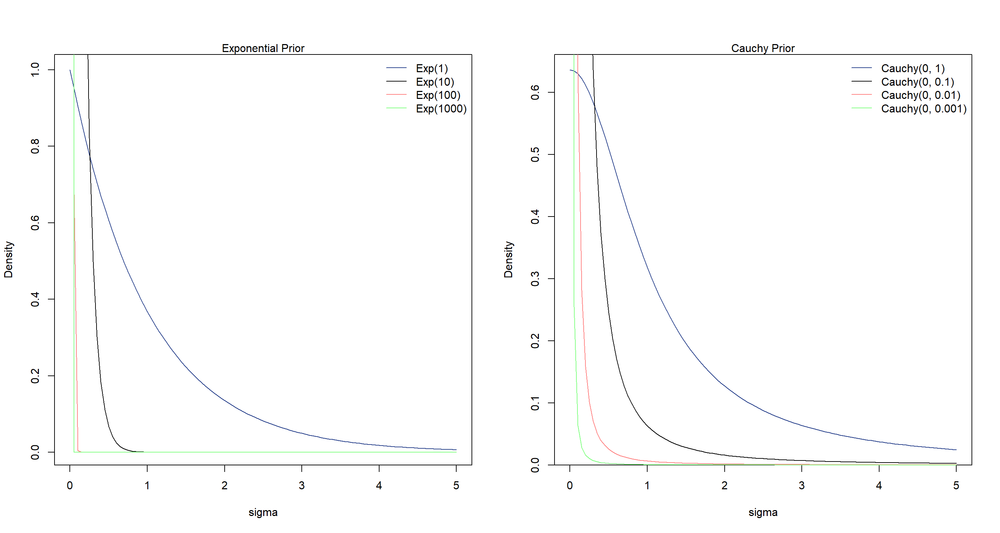
The cauchy distributions show thicker tails while the exponential distributions quickly concentrate. Hence why a concentrated Cauchy prior allow more flexibility that a concentrated exponential prior.
Practice M3
Question: Re-estimate one of the Stan models from the chapter, but at different numbers of warmup iterations. Be sure to use the same number of sampling iterations in each case. Compare the n_eff values.
Answer: The ruggedness model was fine so far so I continue with that one. Here, I build this model with a fixed run length and fixed starting values for each run with changing warmup values:
start <- list(a = c(1, 1), b = c(0, 0), sigma = 1) # use fixed start values for comparability of runs
m.M3 <- ulam(
alist(
log_gdp_std ~ dnorm(mu, sigma),
mu <- a[cid] + b[cid] * (rugged_std - 0.215),
a[cid] ~ dnorm(1, 0.1),
b[cid] ~ dnorm(0, 0.3),
sigma ~ dexp(1)
),
data = dd.trim,
start = start,
chains = 2, cores = 2,
iter = 100
)
warm_list <- c(5, 10, 100, 500, 1000) # define warmup values to run through
n_eff <- matrix(NA, nrow = length(warm_list), ncol = 5) # first make matrix to hold n_eff results
for (i in 1:length(warm_list)) { # loop over warm_list and collect n_eff
w <- warm_list[i]
m_temp <- ulam(m.M3, chains = 2, cores = 2, iter = 1000 + w, warmup = w, start = start)
n_eff[i, ] <- precis(m_temp, 2)$n_eff
}
colnames(n_eff) <- rownames(precis(m_temp, 2))
rownames(n_eff) <- warm_list
n_eff # columns show parameters, rows show n_eff
## a[1] a[2] b[1] b[2] sigma
## 5 2.314186 1.587251 2.713325 1.270369 1.776862
## 10 2243.084776 2157.086156 737.957589 1010.214712 953.010860
## 100 1725.334719 2294.576251 878.481785 1177.016946 1122.495229
## 500 2999.738299 3282.963810 2292.173710 2737.037252 2200.949134
## 1000 2485.029304 3406.341675 2372.274092 2772.175825 2607.552453
As we can see, past just 10 warmup samples, n_eff does not change much (in terms of how useful our samples are). In this case, we could be quite happy with a warmup of 10.
Hard Exercises
Practice H1
Question: Run the model below and then inspect the posterior distribution and explain what it is accomplishing.
mp <- map2stan(
alist(
a ~ dnorm(0, 1),
b ~ dcauchy(0, 1)
),
data = list(y = 1),
start = list(a = 0, b = 0),
iter = 1e4,
chains = 2, cores = 2,
warmup = 100,
WAIC = FALSE
)
Compare the samples for the parameters a and b. Can you explain the different trace plots, using what you know about the Cauchy distribution?
Answer: First of all, let’s inspect the posterior:
precis(mp)
## mean sd 5.5% 94.5% n_eff Rhat4
## a 0.0003388167 0.9988213 -1.601441 1.590561 12762.761 1.000120
## b -0.1918181852 13.8995715 -5.379742 5.346423 3892.011 1.000517
Oof. Those uncertainties don’t look good at all! So what does the model even do? It simply just samples a from a normal distribution with mean 0 and standard deviation 1. b is sampled from a cauchy distribution. Let’s look at the traceplot for this:
plot(mp, n_cols = 1, col = "royalblue4")
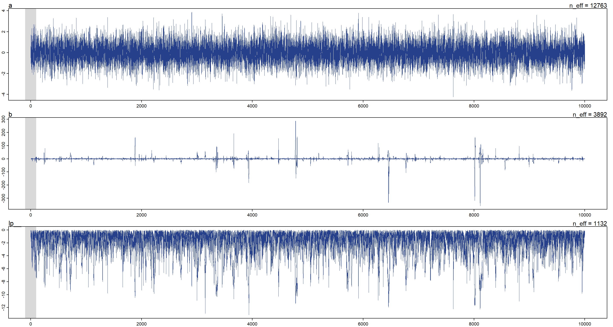
As we can see, there are quite some outliers in the sampling of the cauchy distribution (b). Why is that? Because the cauchy distribution has very heavy tails thus making it more likely to jump to a value that is far out there in terms of posterior probability. Note that this also decreases n_eff. lp in the above is the log-posterior.
Now let’s see how the samples we drew measure up against the underlying functions of a and b, respectively:
post <- extract.samples(mp)
par(mfrow = c(1, 2))
dens(post$a)
curve(dnorm(x, 0, 1), from = -4, to = 4, add = T, lty = 2)
legend("topright", lty = c(1, 2), legend = c("Sample", "Exact density"), bty = "n")
mtext("Normal")
dens(post$b, col = "royalblue4", xlim = c(-10, 10))
curve(dcauchy(x, 0, 1),
from = -10, to = 10, add = T, lty = 2,
col = "royalblue4"
)
mtext("Cauchy")
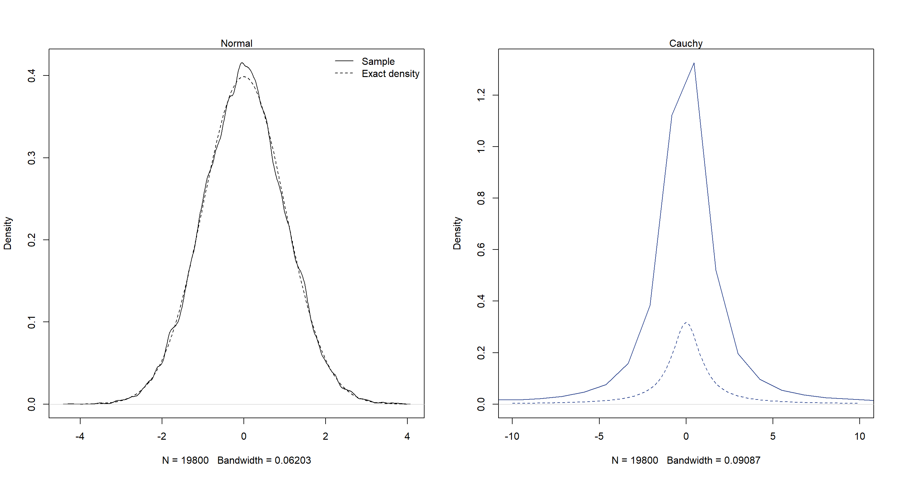
As we can see, the normal distribution has been reconstructed well. The cauchy distributions hasn’t.
Practice H2
Question: Recall the divorce rate example from Chapter 5. Repeat that analysis, using ulam() this time, fitting models m5.1, m5.2, and m5.3. Use compare to compare the models on the basis of WAIC or PSIS. Explain the results.
Answer: First, I need to load the data and prepare it for ulam():
data(WaffleDivorce)
d <- WaffleDivorce
d$D <- standardize(d$Divorce)
d$M <- standardize(d$Marriage)
d$A <- standardize(d$MedianAgeMarriage)
d_trim <- list(D = d$D, M = d$M, A = d$A)
Now I fit the models with ulam():
m5.1_stan <- ulam(
alist(
D ~ dnorm(mu, sigma),
mu <- a + bA * A,
a ~ dnorm(0, 0.2),
bA ~ dnorm(0, 0.5),
sigma ~ dexp(1)
),
data = d_trim,
chains = 4, cores = 4,
log_lik = TRUE # this is needed to get the terms for calculating PSIS or WAIC
)
m5.2_stan <- ulam(
alist(
D ~ dnorm(mu, sigma),
mu <- a + bM * M,
a ~ dnorm(0, 0.2),
bM ~ dnorm(0, 0.5),
sigma ~ dexp(1)
),
data = d_trim,
chains = 4, cores = 4,
log_lik = TRUE # this is needed to get the terms for calculating PSIS or WAIC
)
m5.3_stan <- ulam(
alist(
D ~ dnorm(mu, sigma),
mu <- a + bA * A + bM * M,
a ~ dnorm(0, 0.2),
bA ~ dnorm(0, 0.5),
bM ~ dnorm(0, 0.5),
sigma ~ dexp(1)
),
data = d_trim,
chains = 4, cores = 4,
log_lik = TRUE # this is needed to get the terms for calculating PSIS or WAIC
)
Now we compare the models:
compare(m5.1_stan, m5.2_stan, m5.3_stan, func = PSIS)
## PSIS SE dPSIS dSE pPSIS weight
## m5.1_stan 125.7210 12.708327 0.000000 NA 3.630705 0.7253039155
## m5.3_stan 127.6690 12.852350 1.947996 0.6705316 4.773054 0.2738533387
## m5.2_stan 139.2364 9.936093 13.515361 9.1363047 2.923975 0.0008427459
compare(m5.1_stan, m5.2_stan, m5.3_stan, func = WAIC)
## WAIC SE dWAIC dSE pWAIC weight
## m5.1_stan 125.7778 12.641919 0.000000 NA 3.659072 0.6960655494
## m5.3_stan 127.4407 12.591741 1.662916 0.6770545 4.658881 0.3030766321
## m5.2_stan 139.1754 9.813604 13.397613 9.2109285 2.893468 0.0008578185
WAIC tells a similar story as PSIS, but the model only containing age (m5.1_stan) wins. The model with both predictors (m5.3_stan) does almost as well. However, their respective PSIS and WAIC values are nearly identical. Furthermore, both models get assigned all of the WAIC weight. Let’s call these equal in performance and investigate why:
precis(m5.3_stan)
## mean sd 5.5% 94.5% n_eff Rhat4
## a -0.0001904293 0.10140928 -0.1591984 0.1619373 1877.251 1.0002239
## bA -0.6023698429 0.16025804 -0.8510854 -0.3467602 1085.019 1.0007578
## bM -0.0550634908 0.16034205 -0.3109204 0.2015101 1187.780 0.9998155
## sigma 0.8275838910 0.08826874 0.7028130 0.9779113 1474.265 1.0028212
While m5.3_stan contains the marriage predictor, it is very unsure of it’s influence. In practical terms, this means that m5.1_stan and m5.3_stan make basically the same predictions
Practice H3
Question: Sometimes changing a prior for one parameter has unanticipated effects on other parameters. This is because when a parameter is highly correlated with another parameter in the posterior, the prior influences both parameters. Here’s an example to work and think through.
Go back to the leg length example in Chapter 5. Here is the code again, which simulates height and leg lengths for 100 imagined individuals:
N <- 100 # number of individuals
height <- rnorm(N, 10, 2) # sim total height of each
leg_prop <- runif(N, 0.4, 0.5) # leg as proportion of height
leg_left <- leg_prop * height + rnorm(N, 0, 0.02) # sim left leg as proportion + error
leg_right <- leg_prop * height + rnorm(N, 0, 0.02) # sim right leg as proportion + error
d <- data.frame(height, leg_left, leg_right) # combine into data frame
And below is the model you fit before, resulting in a highly correlated posterior for the two beta parameters. This time, fit the model using ulam():
m5.8s <- ulam(
alist(
height ~ dnorm(mu, sigma),
mu <- a + bl * leg_left + br * leg_right,
a ~ dnorm(10, 100),
bl ~ dnorm(2, 10),
br ~ dnorm(2, 10),
sigma ~ dexp(1)
),
data = d,
chains = 4,
cores = 4,
start = list(
a = 10,
bl = 0,
br = 0.1,
sigma = 1
)
)
Compare the posterior distribution produced by the code above to the posterior distribution produced when you change the prior for br so that it is strictly positive:
m5.8s2 <- ulam(
alist(
height ~ dnorm(mu, sigma),
mu <- a + bl * leg_left + br * leg_right,
a ~ dnorm(10, 100),
bl ~ dnorm(2, 10),
br ~ dnorm(2, 10),
sigma ~ dexp(1)
),
data = d,
chains = 4,
cores = 4,
constraints = list(br = "lower=0"),
start = list(
a = 10,
bl = 0,
br = 0.1,
sigma = 1
)
)
Note the constraints list. What this does is constrain the prior distribution of br so that it has positive probability only above zero. In other words, that prior ensures that the posterior distribution for br will have no probability mass below zero.
Compare the two posterior distributions for m5.8s and m5.8s2. What has changed in the posterior distribution of both beta parameters? Can you explain the change induced by the change in prior?
Answer: It’s probably easiest to just look at the posterior distributions of the beta prameters through the pairs() function:
pairs(m5.8s, main = "Model 1")
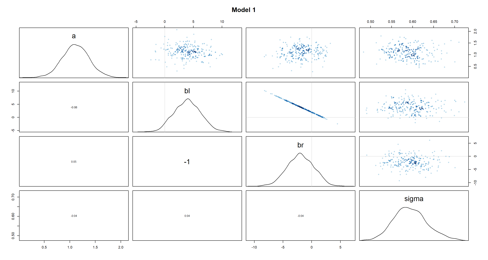
pairs(m5.8s2, main = "Model 2")
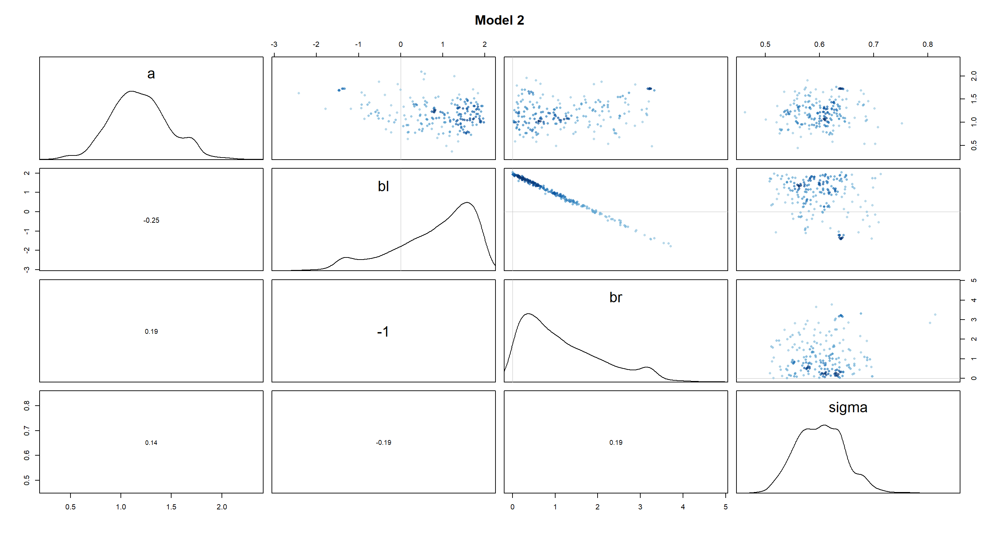
As we can see, the beta distributions have shifted drastically between the different models. Interestingly, bl and br were perfectly symmetric in m5.8s, but are skewed in m5.8s2. Given how the height of a person is approximated in both models (a + bl*leg_left + br*leg_right), the distributions of leg lengths are necessarily negatively correlated (you can be of the same height with a short right leg and long left leg, long left leg and short right leg, or two medium-length legs). Thus, by setting br to be strictly positive in m5.8s2 and made it skewed, we have forced bl to be equally skewed in a mirror image of br.
Practice H4
Question: For the two models fit in the previous problem, use WAIC or PSIS to compare the effective numbers of parameters for each model. You will need to use log_lik=TRUE to instruct ulam() to compute the terms that both WAIC and PSIS need. Which model has more effective parameters? Why?
Answer: Let’s run the models:
m.H4_1 <- ulam(
alist(
height ~ dnorm(mu, sigma),
mu <- a + bl * leg_left + br * leg_right,
a ~ dnorm(10, 100),
bl ~ dnorm(2, 10),
br ~ dnorm(2, 10),
sigma ~ dexp(1)
),
data = d,
chains = 4,
cores = 4,
start = list(
a = 10,
bl = 0,
br = 0.1,
sigma = 1
),
log_lik = TRUE
)
m.H4_2 <- ulam(
alist(
height ~ dnorm(mu, sigma),
mu <- a + bl * leg_left + br * leg_right,
a ~ dnorm(10, 100),
bl ~ dnorm(2, 10),
br ~ dnorm(2, 10),
sigma ~ dexp(1)
),
data = d,
chains = 4,
cores = 4,
constraints = list(br = "lower=0"),
start = list(
a = 10,
bl = 0,
br = 0.1,
sigma = 1
),
log_lik = TRUE
)
Now we compare them with WAIC:
compare(m.H4_1, m.H4_2)
## WAIC SE dWAIC dSE pWAIC weight
## m.H4_1 182.1474 10.21060 0.0000000 NA 2.961292 0.6063273
## m.H4_2 183.0112 9.88398 0.8638001 2.349502 2.382919 0.3936727
The models are pretty much tied. The model with truncated priors (m.H4_2) is less flexible as indicated by pWAIC. This is because the prior is more informative and the variance in the posterior distribution is smaller as a result.
Practice H5
Question: Modify the Metropolis algorithm code from the chapter to handle the case that the island populations have a different distribution than the island labels. This means the island’s number will not be the same as its population.
Answer: First of all, we need our 10 islands with population sizes of 1-10, but in random order:
pop_size <- sample(1:10)
Now we can use the code from the chapter almost unaltered safe for one exception - we need to use indexing to translate island location into population size:
num_weeks <- 1e5
positions <- rep(NA, num_weeks)
current <- 10
for (i in 1:num_weeks) {
positions[i] <- current # record current position
proposal <- current + sample(c(-1, 1), size = 1) # flip coin to generate proposal
# now make sure he loops around the archipelago
if (proposal < 1) proposal <- 10
if (proposal > 10) proposal <- 1
prob_move <- pop_size[proposal] / pop_size[current] # move?
current <- ifelse(runif(1) < prob_move, proposal, current)
}
To see if this works, we can plot population size against frequency of visit by the king:
f <- table(positions) # compute frequencies
plot(as.vector(f), pop_size,
type = "n", # plot frequencies against relative population sizes
xlab = "frequency", ylab = "population size"
) # empty plot
text(x = f, y = pop_size, labels = names(f)) # add names of islands / their positions
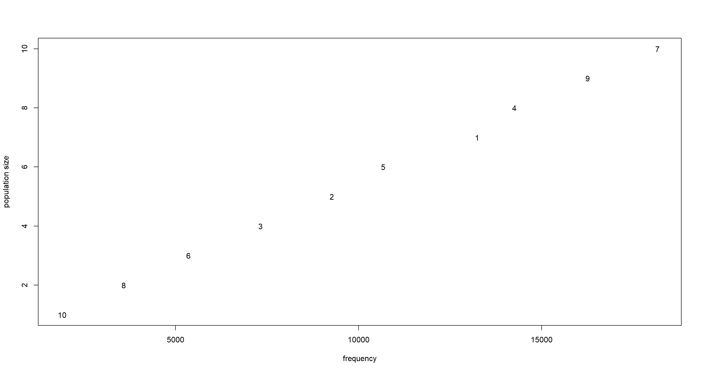
Practice H6
Question: Modify the Metropolis algorithm code from the chapter to write your own simple MCMC estimator for globe tossing data and model from Chapter 2.
Answer: We want to fit the following model:
$$w∼Binom(θ,n)$$ $$θ∼Unif(0,1)$$ Our Metropolis algorithm looks like this:
set.seed(42)
# the globe tossing data
w <- 6
n <- 9
# prior on p
p_prior <- function(p) dunif(p, min = 0, max = 1)
# initializing MCMC
iter <- 1e4
p_sample <- rep(0, iter)
p_current <- 0.5 # start value
for (i in 1:iter) {
p_sample[i] <- p_current # # record current p
p_proposal <- runif(1, min = 0, max = 1) # generate proposal
# compute likelihood for current and proposal
lkhd_current <- dbinom(w, n, p_current)
lkhd_proposal <- dbinom(w, n, p_proposal)
prob_proposal <- lkhd_proposal * p_prior(p_proposal)
prob_current <- lkhd_current * p_prior(p_current)
prob_accept <- prob_proposal / prob_current
p_current <- ifelse(runif(1) < prob_accept, p_proposal, p_current)
}
Let’s visualise what happened here:
plot(p_sample, type = "l", col = "royalblue4")
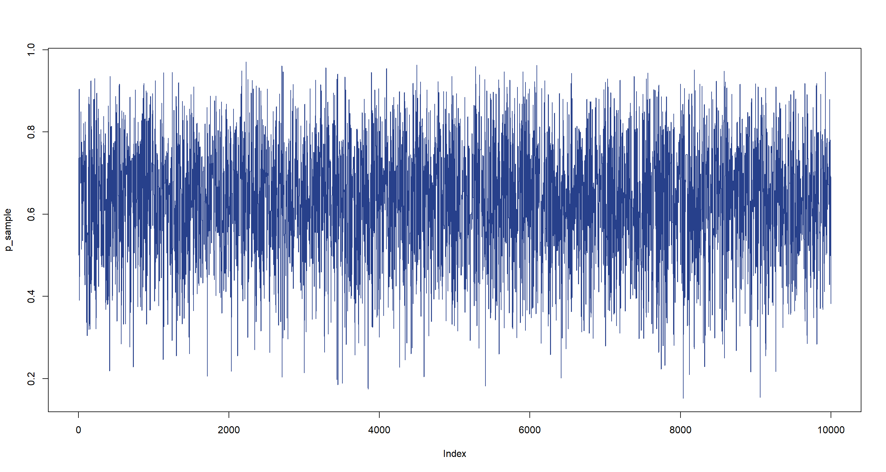 Finally, let’s plot the posterior distribution:
dens(p_sample, col = "royalblue4", adj = 1)
curve(dbeta(x, w + 1, n - w + 1), from = 0, to = 1, add = T, lty = 2)
abline(v = median(p_sample))
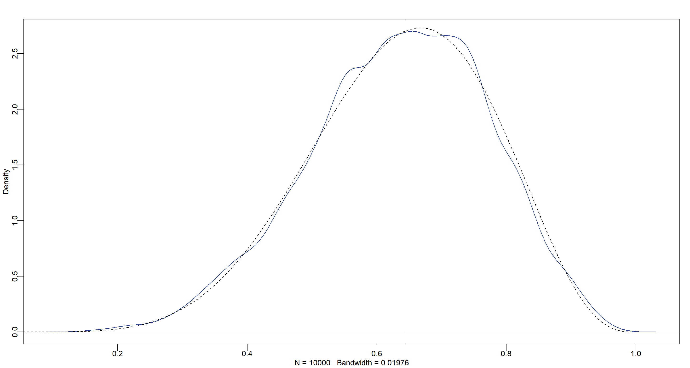
Session Info
sessionInfo()
## R version 4.0.5 (2021-03-31)
## Platform: x86_64-w64-mingw32/x64 (64-bit)
## Running under: Windows 10 x64 (build 19043)
##
## Matrix products: default
##
## locale:
## [1] LC_COLLATE=English_United Kingdom.1252 LC_CTYPE=English_United Kingdom.1252 LC_MONETARY=English_United Kingdom.1252 LC_NUMERIC=C
## [5] LC_TIME=English_United Kingdom.1252
##
## attached base packages:
## [1] parallel stats graphics grDevices utils datasets methods base
##
## other attached packages:
## [1] tidybayes_2.3.1 rethinking_2.13 rstan_2.21.2 ggplot2_3.3.6 StanHeaders_2.21.0-7
##
## loaded via a namespace (and not attached):
## [1] Rcpp_1.0.7 mvtnorm_1.1-1 lattice_0.20-41 tidyr_1.1.3 prettyunits_1.1.1 ps_1.6.0 assertthat_0.2.1 digest_0.6.27 utf8_1.2.1
## [10] V8_3.4.1 plyr_1.8.6 R6_2.5.0 backports_1.2.1 stats4_4.0.5 evaluate_0.14 coda_0.19-4 highr_0.9 blogdown_1.3
## [19] pillar_1.6.0 rlang_0.4.11 curl_4.3.2 callr_3.7.0 jquerylib_0.1.4 R.utils_2.10.1 R.oo_1.24.0 rmarkdown_2.7 styler_1.4.1
## [28] labeling_0.4.2 stringr_1.4.0 loo_2.4.1 munsell_0.5.0 compiler_4.0.5 xfun_0.22 pkgconfig_2.0.3 pkgbuild_1.2.0 shape_1.4.5
## [37] htmltools_0.5.1.1 tidyselect_1.1.0 tibble_3.1.1 gridExtra_2.3 bookdown_0.22 arrayhelpers_1.1-0 codetools_0.2-18 matrixStats_0.61.0 fansi_0.4.2
## [46] crayon_1.4.1 dplyr_1.0.5 withr_2.4.2 MASS_7.3-53.1 R.methodsS3_1.8.1 distributional_0.2.2 ggdist_2.4.0 grid_4.0.5 jsonlite_1.7.2
## [55] gtable_0.3.0 lifecycle_1.0.0 DBI_1.1.1 magrittr_2.0.1 scales_1.1.1 KernSmooth_2.23-18 RcppParallel_5.1.2 cli_3.0.0 stringi_1.5.3
## [64] farver_2.1.0 bslib_0.2.4 ellipsis_0.3.2 generics_0.1.0 vctrs_0.3.7 rematch2_2.1.2 forcats_0.5.1 tools_4.0.5 svUnit_1.0.6
## [73] R.cache_0.14.0 glue_1.4.2 purrr_0.3.4 processx_3.5.1 yaml_2.2.1 inline_0.3.17 colorspace_2.0-0 knitr_1.33 sass_0.3.1